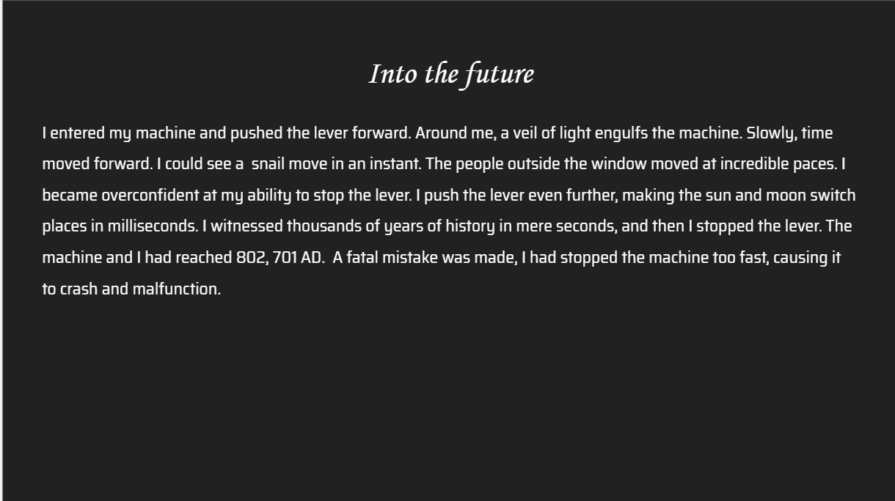

<!DOCTYPE html>
<html lang="en">
  <html>
    <head>
      <!Obviously adds the title.>
      <title id="companyTitle">Ascension Systems</title>
    </head>
    <style type="text/css">
      .terminal,
      span {
        /* Terminal sizing stuff */
        --size: 1.4;
      }
    </style>

    <meta charset="utf-8" />
    <script src="https://code.jquery.com/jquery-3.3.1.min.js"></script>
    <script src="https://unpkg.com/jquery.terminal/js/jquery.terminal.min.js"></script>
    <!links to the Jquery terminal.>
    <link
      rel="stylesheet"
      href="https://unpkg.com/jquery.terminal/css/jquery.terminal.min.css"
    />
    <link rel="stylesheet" href="style.css" />
    <!Links the index.html file to the style.css to style the website>

    <body>
      <script>
                $("body").terminal(
                  {
                    //these create images whenever the correct command is inputed
                    image1: function () {
                      this.echo($(''));
                    },
                    image2: function () {
                      this.echo($(''));
                    },
                    image3: function () {
                      this.echo($(''));
                    },
                    image4: function () {
                      this.echo($(''));
                    },
                    image5: function () {
                      this.echo($(''));
                    },
                    image6: function () {
                      this.echo($(''));
                    },
                    //this just looks cool
                    cdroot: function () {
                      this.echo("│ ├───166│ │ ├───167│ │ ├───176│ │ ├───177│ │ ├───183│ │ ├───185│ │ ├───187│ │ ├───191│ │ ├───193│ │ ├───200│ │ ├───201│ │ ├───203│ │ ├───205│ │ ├───209│ │ ├───21│ │ ├───212│ │ ├───215│ │ ├───217│ │ ├───221│ │ ├───223│ │ ├───227│ │ ├───23│ │ ├───235│ │ ├───237│ │ ├───241│ │ ├───242│ │ ├───244│ │ ├───246│ │ ├───249│ │ ├───251│ │ ├───26│ │ ├───269│ │ ├───271│ │ ├───32│ │ ├───35│ │ ├───37│ │ ├───39│ │ ├───42│ │ ├───45│ │ ├───46│ │ ├───51│ │ ├───59│ │ ├───61│ │ ├───66│ │ ├───67│ │ ├───68│ │ ├───75│ │ ├───77│ │ ├───84│ │ ├───94│ │ ├───98│ │ └───default│ │ ├───1025│ │ ├───10250│ │ ├───1026│ │ ├───1027│ │ ├───1028│ │ ├───1029│ │ ├───1030│ │ ├───1031│ │ ├───1032│ │ ├───1033│ │ ├───1035│ │ ├───1036│ │ ├───1037│ │ ├───1038│ │ ├───1040│ │ ├───1041│ │ ├───1042│ │ ├───1043│ │ ├───1044│ │ ├───1045│ │ ├───1046│ │ ├───1048│ │ ├───1049│ │ ├───1050│ │ ├───1051│ │ ├───1053│ │ ├───1055│ │ ├───1058│ │ ├───1060│ │ ├───1069│ │ ├───1110│ │ ├───11274│ │ ├───12298│ │ ├───13322│ │ ├───14346│ │ ├───15370│ │ ├───16394│ │ ├───2052│ │ ├───2057│ │ ├───2058│ │ ├───2070│ │ ├───2074│ │ ├───3076│ │ ├───3082│ │ ├───3084│ │ ├───8202│ │ ├───9226│ │ └───9242│ ├───ja-JP│ └───SetupPlatform├───OpenSSH├───osa-Osge-001├───pa-IN├───PerceptionSimulation│ ├───Assets│ ├───de-DE│ ├───en-US│ ├───ja-JP│ └───pris├───pl-PL├───PointOfService│ └───ProtocolProviders│ ├───de-DE│ ├───en-US│ └───ja-JP├───Printing_Admin_Scripts│ ├───de-DE│ ├───en-US│ └───ja-JP├───ProximityToast├───pt-BR├───pt-PT├───ras│ └───SSTPProxy├───RasToast├───Recovery├───restore├───ro-RO├───ru-RU├───SecureBootUpdates├───setup│ └───en-US├───Sgrm├───ShellExperiences├───si-lk├───sk-SK├───sl-SI├───SleepStudy├───slmgr│ ├───0407│ ├───0409│ └───0411├───SMI│ ├───Manifests│ ├───Schema│ └───Store│ └───Machine├───Speech│ ├───Common│ │ ├───de-DE│ │ ├───en-US│ │ └───ja-JP│ ├───Engines│ │ ├───SR│ │ │ ├───de-DE│ │ │ ├───en-US│ │ │ └───ja-JP│ │ └───TTS│ └───SpeechUX│ ├───de-de│ ├───en-US│ └───ja-jp├───Speech_OneCore│ ├───common│ │ ├───de-DE│ │ ├───en-AU│ │ ├───en-CA│ │ ├───en-GB│ │ ├───en-US│ │ ├───es-ES│ │ ├───es-MX│ │ ├───fr-CA│ │ ├───fr-FR│ │ ├───it-IT│ │ ├───ja-JP│ │ └───zh-CN│ ├───Engines│ │ ├───SR│ │ └───TTS│ └───VoiceActivation│ ├───de-DE│ ├───en-US│ └───ja-JP├───spool│ ├───drivers│ │ ├───ARM64│ │ ├───color│ │ ├───IA64│ │ ├───W32X86│ │ │ ├───3│ │ │ └───PCC│ │ └───x64│ │ ├───3│ │ │ ├───de-DE│ │ │ ├───en-US│ │ │ └───ja-JP│ │ ├───PCC│ │ ├───{0F3528DB-F7FE-46A2-B96C-CC8895191274}│ │ ├───{A16D88A5-0F07-46DE-A947-F56C4738814C}│ │ ├───{B5DE9C46-ED53-4BEB-9980-16BB35003A92}│ │ ├───{C2B6C741-FE45-468A-805F-331EF43F60B3}│ │ └───{EF9A6D56-5E63-4876-A4FC-FFF634925593}│ ├───PRINTERS│ ├───prtprocs│ │ └───x64│ ├───SERVERS│ ├───tools│ │ ├───Microsoft Print To PDF│ │ └───Microsoft XPS Document Writer│ └───V4Dirs│ ├───213A66A6-1865-4561-A9F4-DA0A6C86B437│ ├───4479ABEC-A3CD-442C-9322-082079E75AC8│ ├───46B2C84C-C3D4-43DC-B263-37F53AB68529│ ├───48B150DD-B482-4ED4-BFA3-B500D8CF2C25│ ├───4DF84D74-357C-455F-987B-A156B65F3BDD│ ├───566E453D-26B0-4EC1-BE16-986859E33366│ ├───72B6DD03-94AE-45AB-AB46-0D15FC87EB51│ ├───77ACA28B-8367-407A-BFD2-02DE2C6B003F│ ├───8FFAEDC1-AA1A-4CF2-B4A7-3E31168916AB│ ├───993A5B1A-0CE8-4544-AC71-B8B39DAC0EBF│ ├───9E2B2EC1-A1A8-4846-8351-D9836BBE71E0│ ├───A2946F96-B4D6-4F2E-8D46-BDA85E6F2C28│ ├───BD646BD2-FC44-4005-9627-B95F1D49D844│ ├───DB31C5D7-3D34-42C5-9C76-EB168390B139│ ├───DF3F89E7-6AE7-40F5-9132-47CBB2A8A0C9│ ├───EE07AFBD-850E-40BE-91CC-EA98EAFAD8D8│ ├───F0AB1704-6CF9-4208-BB34-09860CAAEB8A│ └───F7B540CF-1DE0-4591-8BCF-EA11F3AFCDB6├───spp│ ├───plugin-manifests-signed│ ├───store│ │ └───2.0│ │ └───cache│ └───tokens│ ├───issuance│ ├───pkeyconfig│ ├───ppdlic│ ├───rules│ └───skus│ ├───Core│ └───CoreSingleLanguage├───sppui├───sr-Latn-RS├───sru├───sv-SE├───Sysprep│ ├───ActionFiles│ ├───de-DE│ ├───en-US│ └───ja-JP├───SystemResetPlatform│ ├───de-DE│ ├───en-US│ └───ja-JP├───ta-in├───ta-lk├───Tasks├───Tasks_Migrated├───th-TH├───ti-et├───tr-TR├───uk-UA├───wbem│ ├───AutoRecover│ ├───de-DE│ ├───en-US│ ├───ja-JP│ ├───Logs│ ├───MOF│ ├───Performance│ ├───Repository│ ├───tmf│ └───xml├───WCN│ ├───de-DE│ ├───en-US│ └───ja-JP├───WDI├───WinBioDatabase├───WinBioPlugIns│ ├───de-DE│ ├───en-US│ ├───FaceDriver│ │ └───amd64│ └───ja-JP├───WindowsPowerShell│ └───v1.0│ ├───de│ ├───de-DE│ ├───en│ ├───en-US│ ├───Examples│ ├───ja│ ├───ja-JP│ ├───Modules│ │ ├───Appx│ │ │ ├───de-DE│ │ │ ├───en-US│ │ │ └───ja-JP│ │ ├───CimCmdlets│ │ ├───ConfigDefender│ │ ├───Defender│ │ ├───DirectAccessClientComponents│ │ ├───Dism│ │ │ ├───de│ │ │ ├───en│ │ │ └───ja│ │ ├───DnsClient│ │ ├───EventTracingManagement│ │ ├───iSCSI│ │ ├───ISE│ │ ├───Microsoft.PowerShell.Archive│ │ │ ├───de-DE│ │ │ ├───en-US│ │ │ └───ja-JP│ │ ├───Microsoft.PowerShell.Diagnostics│ │ ├───Microsoft.PowerShell.Host│ │ ├───Microsoft.PowerShell.LocalAccounts│ │ │ └───1.0.0.0│ │ │ ├───de│ │ │ ├───en│ │ │ └───ja│ │ ├───Microsoft.PowerShell.Management│ │ ├───Microsoft.PowerShell.ODataUtils│ │ │ ├───de-DE│ │ │ ├───en-US│ │ │ └───ja-JP│ │ ├───Microsoft.PowerShell.Security│ │ ├───Microsoft.PowerShell.Utility│ │ ├───Microsoft.WSMan.Management│ │ ├───MsDtc│ │ │ ├───de│ │ │ ├───de-DE│ │ │ ├───en│ │ │ ├───en-US│ │ │ ├───ja│ │ │ └───ja-JP│ │ ├───NetAdapter│ │ ├───NetConnection│ │ ├───NetEventPacketCapture│ │ ├───NetLbfo│ │ ├───NetNat│ │ ├───NetQos│ │ ├───NetSecurity│ │ │ ├───de│ │ │ ├───en│ │ │ └───ja│ │ ├───NetSwitchTeam│ │ ├───NetTCPIP│ │ ├───NetworkConnectivityStatus│ │ ├───NetworkSwitchManager│ │ ├───NetworkTransition│ │ ├───PcsvDevice│ │ ├───PersistentMemory│ │ │ ├───de│ │ │ ├───en│ │ │ └───ja│ │ ├───PnpDevice│ │ ├───PrintManagement│ │ ├───Provisioning│ │ ├───PSDiagnostics│ │ ├───PSScheduledJob│ │ ├───PSWorkflow│ │ ├───PSWorkflowUtility│ │ ├───ScheduledTasks│ │ ├───SmbWitness│ │ ├───StartLayout│ │ ├───Storage│ │ ├───StorageBusCache│ │ ├───TroubleshootingPack│ │ │ └───en-US│ │ ├───VpnClient│ │ │ ├───de-DE│ │ │ ├───en-US│ │ │ └───ja-JP│ │ ├───Wdac│ │ ├───WindowsDeveloperLicense│ │ ├───WindowsErrorReporting│ │ ├───WindowsSearch│ │ │ ├───de│ │ │ ├───en│ │ │ └───ja│ │ ├───WindowsUpdate│ │ └───WindowsUpdateProvider│ ├───Schemas│ │ └───PSMaml│ └───SessionConfig├───winevt│ ├───Logs│ └───TraceFormat├───WinMetadata├───winrm│ ├───0407│ ├───0409│ └───0411├───zh-CN└───zh-TW"
                      );
                    },
                    name: function (name) {
                      this.echo(
                        "Hello, " + name + ". Welcome to the Ascension Systems Terminal"
                      );
                    },
                    //gotta give credit
                    credits: function () {
                      this.echo(
                        "Jakub T. Jankiewicz for documentation and providing the Jquery terminal. Pavan Sai, Viraj, Ishaan, and Rishikesh. Created by Samrath Singh Jhand. Using tutorials provided by medium.com, and hackermoon.com for tutorials on echoing images using the Jquery terminal. https://terminal.jcubic.pl/"
                      );
                    },
                    lastuser: function () {
                      this.echo("The Time Traveler");
                    },
                    lastaccessed: function () {
                      this.echo("802,701 AD by The Time Traveler");
                    },
                    help: function () {
                      this.echo(
                        "name - name command and " +
                          "pass your name as argument\n" +
                          "lastuser to know the last person who accessed this terminal\n" +
                          "cdroot- to make some things look cool\n" +
                          "lastaccessed- to know the last user who accessed this terminal.\n" +
                          "credits- displays all credits and contributions.\n" +
                          "image<number> displays one of the slides. Only numbers from 1-6. e.g. image1 for the first slide. image6 for the last one\n"
                      );
                    },
                  },
                  {
                    //just practicing and playing around.
                    //not a real company or anything.
                    greetings:
                      "Ascension Systems " +
                      "Copyright, Ascension Systems 1875-1997, type HELP for help with using this terminal. Please type your name below with the prefix name ex.name John Doe",
                  }
                );
      </script>
    </body>
  </html>
</html>
